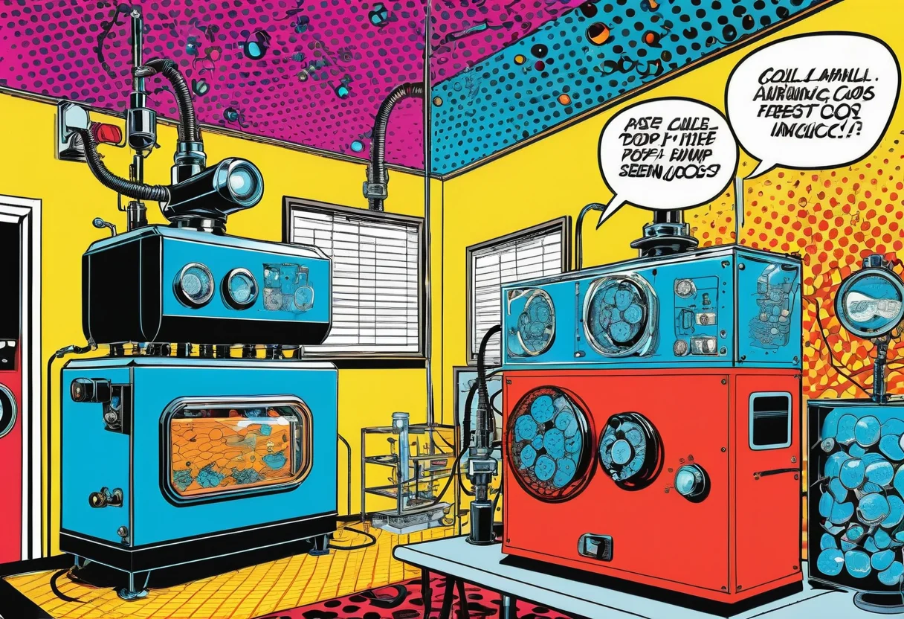

Luftpumpe und Sauerstoff im Aquarium – wann Sprudelsteine wirklich helfen
Kaum ein Zubehörteil ist so umstritten wie die Luftpumpe. Die einen schwören auf den beruhigenden Blubber-Sound, die anderen halten sie für unnötigen Lärm und Technik-Overkill. Die Wahrheit liegt – wie so oft – dazwischen. Eine Luftpumpe mit Sprudelstein kann unter bestimmten Umständen lebensrettend sein, ist aber in den meisten stabilen Aquarien schlicht überflüssig. In diesem Guide erfährst du, wann eine Luftpumpe wirklich sinnvoll ist, wie Sauerstoff im Aquarium funktioniert und worauf du bei Auswahl und Betrieb achten solltest.
Der häufigste Irrtum: Viele glauben, die Luftpumpe würde den Fischen direkt Sauerstoff zuführen – schließlich sieht man die Blasen aufsteigen. Tatsächlich findet der Gasaustausch aber an der Wasseroberfläche statt. Die Blasen selbst transportieren kaum Sauerstoff ins Wasser. Ihr Effekt ist ein indirekter: Sie erzeugen eine Wasserbewegung, die die Oberfläche durchmischt und so den Gasaustausch verbessert. Genau derselbe Effekt lässt sich aber auch mit einer Strömungspumpe oder einem Filterauslass erreichen – und das ohne Lärm und ohne zusätzliches Kabel.
Sauerstoff im Aquarium – wie funktioniert der Gasaustausch?
Sauerstoff gelangt auf natürlichem Weg in das Aquarienwasser: durch den Austausch an der Wasseroberfläche und durch die Photosynthese der Wasserpflanzen. Die Menge des gelösten Sauerstoffs hängt von mehreren Faktoren ab: der Temperatur (kaltes Wasser kann mehr Sauerstoff binden als warmes), der Oberflächenbewegung (je unruhiger die Oberfläche, desto mehr Sauerstoff wird eingetragen) und dem Pflanzenbestand (bei Licht produzieren Pflanzen Sauerstoff, im Dunkeln verbrauchen sie ihn).
Ein gesundes, gut bepflanztes Aquarium mit moderatem Fischbesatz ist tagsüber in der Regel ausreichend mit Sauerstoff versorgt – oft sogar leicht übersättigt. Nachts sinkt der Sauerstoffgehalt, weil die Pflanzen auf Atmung umschalten und ebenfalls Sauerstoff verbrauchen. In der Morgenstunde, kurz bevor das Licht angeht, ist der Sauerstoffgehalt am niedrigsten. In stabilen Becken fällt er aber selten unter kritische Werte von 4 mg/l.
Typische Sauerstoffwerte im Aquarium
| Sauerstoffgehalt (mg/l) | Bewertung | Auswirkung |
|---|---|---|
| 8–12 mg/l | Hervorragend | Ideal für die meisten Fische, hohe Aktivität, beste Futterverwertung. |
| 6–8 mg/l | Gut | Normalbereich für die meisten Aquarien, ausreichend für alle Fische. |
| 4–6 mg/l | Ausreichend | Noch tolerabel, aber keine Reserve für Stresssituationen mehr. |
| 3–4 mg/l | Kritisch | Fische zeigen ersten Stress: schnelle Kiemenbewegung, Hechten an die Oberfläche. |
| Unter 3 mg/l | Akute Gefahr | Fische ersticken, nützliche Bakterien sterben ab, Nitritwerte steigen. |
Oberflächenbewegung – der unterschätzte Faktor
Die Wasseroberfläche ist die Grenzschicht, an der der gesamte Gasaustausch stattfindet. Sauerstoff diffundiert aus der Luft ins Wasser, während Kohlendioxid (CO₂) aus dem Wasser entweicht. Je größer die Oberfläche und je bewegter die Wasseroberfläche, desto intensiver ist dieser Austausch. Eine ruhige, stehende Wasseroberfläche kann den Gasaustausch um bis zu 90 Prozent reduzieren – das ist der Hauptgrund für Sauerstoffmangel in vielen Aquarien, nicht etwa eine zu kleine Pumpe.
Die einfachste Maßnahme zur Verbesserung der Sauerstoffversorgung ist daher: die Oberflächenbewegung erhöhen. Das erreichst du, indem du den Filterauslass so ausrichtest, dass er die Wasseroberfläche leicht kräuselt. Ein leises, sanftes Plätschern an der Oberfläche ist das beste Zeichen für einen guten Gasaustausch. Ist die Oberfläche spiegelglatt, solltest du gegensteuern – entweder durch Umlenkung des Filterauslasses oder durch eine zusätzliche Strömungspumpe.
Oberflächenbewegung vs. Luftpumpe – ein Vergleich
| Methode | Sauerstoffeintrag | CO₂-Verlust | Lautstärke | Kosten |
|---|---|---|---|---|
| Filterauslass auf Oberfläche | ⭐⭐⭐⭐ | ⭐⭐ (mäßig) | Leise | Fast kein Mehrpreis |
| Luftpumpe + Sprudelstein | ⭐⭐⭐ | ⭐⭐⭐⭐ (hoch) | Laut bis leise | 15–50 € |
| Strömungspumpe | ⭐⭐⭐⭐⭐ | ⭐⭐ (mäßig) | Leise bis moderat | 30–100 € |
| Nur Pflanzen (tagsüber) | ⭐⭐⭐⭐⭐ | ⭐ (gering) | Lautlos | 0 € |
Wann eine Luftpumpe wirklich hilft
Trotz aller Vorbehalte: Es gibt Situationen, in denen eine Luftpumpe nicht nur sinnvoll, sondern lebensrettend ist. Hier sind die wichtigsten Einsatzszenarien:
Akuter Sauerstoffmangel erkennen
Die Symptome sind eindeutig: Fische hechten an die Wasseroberfläche und schnappen nach Luft („Luftschnappen“), die Kiemenbewegung ist schnell und flatternd, die Fische sind apathisch oder schwimmen unkoordiniert. In extremen Fällen liegen Fische auf der Seite und können sich nicht mehr aufrichten. Sobald du diese Anzeichen bemerkst, zählt jede Minute – hier hilft nur noch sofortige, massive Belüftung.
Notfälle und akute Krisen
- Medikamentenbehandlung: Viele Medikamente belasten die Kiemen und reduzieren die Sauerstoffaufnahme. Gleichzeitig sterben durch die Behandlung Bakterien ab, deren Abbau zusätzlich Sauerstoff verbraucht. Eine Luftpumpe während der Behandlung kann Leben retten.
- Hitzewelle im Sommer: Mit steigender Wassertemperatur sinkt die Sauerstofflöslichkeit drastisch. Bei 30 °C kann Wasser nur noch halb so viel Sauerstoff binden wie bei 20 °C. Gleichzeitig steigt der Sauerstoffbedarf der Fische. Eine Luftpumpe ist im Sommer oft die einfachste Lösung.
- Stromausfall: Wenn alle technischen Geräte ausfallen, ist eine batteriebetriebene Luftpumpe die einzige Rettung für die Fische. Mehr dazu in unserem Stromausfall-Notfallplan.
- Nach dem Wasserwechsel: Wenn du viel Wasser auf einmal gewechselt hast und das frische Wasser noch nicht vollständig mit dem Aquarienwasser durchmischt ist, kann eine kurzzeitige Belüftung helfen, Temperatur- und Sauerstoffunterschiede auszugleichen.
🛒 Leise Aquarium-Luftpumpe
Für Notfälle, Schwammfilter und zusätzliche Belüftung – mit Rückschlagventil und leiser Membrantechnik.
Werbelink: Als Amazon-Partner verdienen wir an qualifizierten Käufen.
Sprudelstein und Schwammfilter – zwei typische Anwendungen
Neben der reinen Belüftung gibt es zwei klassische Einsatzbereiche für Luftpumpen, die auch in stabilen Aquarien sinnvoll sein können: der Sprudelstein zur gezielten Strömung und der Schwammfilter als biologischer Filter in Zucht- und Aufzuchtbecken.
Der Sprudelstein
Ein Sprudelstein (auch Membranstein oder Ausströmer genannt) wird an den Schlauch der Luftpumpe angeschlossen und am Beckenboden platziert. Die aufsteigenden Blasen erzeugen eine Wasserströmung von unten nach oben, die die gesamte Wassersäule durchmischt. Das ist besonders in tiefen Becken (ab 50 cm Höhe) sinnvoll, weil sich dort sonst sauerstoffarme Zonen am Boden bilden können. Zudem verhindert die Strömung, dass sich Mulm und Futterreste in toten Winkeln ansammeln.
Die Wahl des richtigen Sprudelsteins ist entscheidend. Feinporige Ausströmer (Keramik oder hochwertiger Kunststoff) erzeugen feine Blasen, die eine größere Oberfläche haben und länger im Wasser bleiben – das verbessert den Gasaustausch. Grobporige Steine erzeugen große Blasen, die schnell aufsteigen und eher zur optischen Beruhigung dienen. Für die Sauerstoffversorgung sind feinporige Steine eindeutig zu bevorzugen.
Der Schwammfilter
Schwammfilter (auch Hamburger Mattenfilter oder einfache Schaumstofffilter) werden durch eine Luftpumpe angetrieben. Die aufsteigenden Luftblasen erzeugen einen Sog, der Wasser durch den Schwamm zieht – mechanische und biologische Filterung in einem. Schwammfilter sind ideal für Zuchtbecken, weil sie keine Fische ansaugen können und eine große Oberfläche für Bakterien bieten. In Aufzuchtbecken für Jungfische sind sie Standard, weil die feinen Strömungen kein Risiko für die kleinen Fische darstellen.
Sommerhitze, Medikamente und Notfälle – die wichtigsten Einsatzszenarien im Detail
Jedes dieser Szenarien verdient eine genauere Betrachtung, weil hier die Luftpumpe ihre Stärken voll ausspielen kann.
Sommerhitze – wenn das Wasser kocht
Im Sommer ist das Aquarium oft die größte Sorge vieler Aquarianer. Die Wassertemperatur steigt, die Fische werden lethargisch, der Sauerstoffgehalt sinkt. Ab 28 °C wird es kritisch für viele Fischarten, ab 30 °C lebensbedrohlich. Eine Luftpumpe hilft auf zwei Arten: Erstens verbessert sie den Gasaustausch an der Oberfläche und treibt zusätzlichen Sauerstoff ein. Zweitens kühlt die Verdunstung an der Wasseroberfläche das Becken – jeder Liter verdunstetes Wasser entzieht dem Becken etwa 580 kcal Wärme. Eine Luftpumpe verstärkt die Verdunstung und kann so die Temperatur um 1–2 °C senken.
Zusätzlich zur Luftpumpe solltest du im Sommer die Beleuchtungsdauer verkürzen (auf 6–7 Stunden), die Fütterung reduzieren und regelmäßig kleine Wasserwechsel (10–15 %) mit kühlerem Wasser durchführen. Ein Ventilator, der auf die Wasseroberfläche bläst, kann die Kühlwirkung noch verstärken.
Medikamente – Sauerstoff als Unterstützung
Viele Aquarienfisch-Medikamente enthalten Wirkstoffe, die die Kiemen reizen oder die Sauerstoffaufnahme beeinträchtigen. Formalin, Malachitgrün und Kupferpräparate sind besonders kritisch. Gleichzeitig sterben durch die Behandlung Bakterien und Parasiten ab, deren Abbau durch Mikroorganismen zusätzlichen Sauerstoff verbraucht. Eine Luftpumpe während der Medikamentenbehandlung ist daher fast immer empfehlenswert – außer das Medikament ist sauerstoffempfindlich (selten, aber möglich – lies den Beipackzettel).
Lautstärke reduzieren – die leise Luftpumpe
Das größte Problem der meisten Luftpumpen ist die Lautstärke. Das typische Brummen und Vibrieren stört nicht nur dich, sondern auch deine Fische – Fische nehmen niederfrequente Schwingungen sehr intensiv wahr und können unter Dauerlärm leiden. Glücklicherweise gibt es mehrere Möglichkeiten, die Lautstärke deutlich zu reduzieren:
Tipps für eine leise Luftpumpe
- Pumpe entkoppeln: Stelle die Luftpumpe nicht direkt auf den Unterschrank oder das Aquarium. Verwende eine weiche Unterlage (Schaumstoff, Moosgummi, ein Küchentuch) oder hänge die Pumpe an einem Gummiseil auf. Das entkoppelt die Vibrationen vom Untergrund.
- Qualität kaufen: Günstige Membranpumpen sind fast immer lauter als hochwertige Modelle. Die Investition in eine Markenpumpe (Eheim, JBL, Tetra, Schego) lohnt sich – leise Pumpen gibt es ab etwa 30 Euro.
- Rückschlagventil einbauen: Das verhindert nicht nur Wasserrücklauf beim Ausfall, sondern reduziert auch das Schlagen der Membran.
- Schlauchlänge optimieren: Ein zu kurzer Schlauch überträgt Vibrationen direkt ins Aquarium. Ein zu langer Schlauch dämpft die Pumpleistung. Die ideale Länge liegt bei 1–2 Metern.
- Pumpe in einem schalldämmenden Gehäuse unterbringen: Ein belüfteter Kasten aus Holz oder Kunststoff, ausgekleidet mit Akustikschaum, kann die Lautstärke um 50 Prozent reduzieren.
Fehler vermeiden – die häufigsten Irrtümer bei Luftpumpen
Der Einsatz von Luftpumpen ist von vielen Mythen und Halbwahrheiten umgeben. Hier sind die häufigsten Fehler, die ich immer wieder beobachte:
| Fehler | Realität | Richtige Lösung |
|---|---|---|
| „Je mehr Blasen, desto besser“ | Große Blasen transportieren kaum Sauerstoff, verwirbeln aber CO₂. | Feinporige Ausströmer verwenden oder die Oberflächenbewegung optimieren. |
| „Nachts muss die Luftpumpe laufen“ | In den meisten Becken sinkt der O₂-Gehalt nachts nicht kritisch. | Nur bei hohem Besatz oder Pflanzenüberschuss ist Belüftung nötig. |
| „Die Luftpumpe ersetzt den Filter“ | Die biologische Filterung wird nicht ersetzt. | Luftpumpe ist Ergänzung, kein Ersatz für den Filter. |
| „Luftpumpen sind immer laut“ | Moderne Qualitätspumpen sind kaum hörbar. | Auf leise Modelle achten und die Pumpe entkoppeln. |
| „Jedes Aquarium braucht eine Luftpumpe“ | Die meisten Becken kommen ohne aus. | Nur bei Bedarf einsetzen – als Reserve für Notfälle vorhalten. |
Praxis-Setups – drei Beispiele für den Luftpumpen-Einsatz
Setup 1: Das Gesellschaftsbecken (120 Liter) mit Normalbesatz
Ein klassisches Gesellschaftsbecken mit Neonsalmlern, Panzerwelsen und einer Gruppe Guppys, gut bepflanzt mit Javafarn, Anubias und Vallisneria. Tagsüber ist der Sauerstoffgehalt durch die Pflanzen bei 8–9 mg/l. Nachts fällt er auf 5–6 mg/l. Eine Luftpumpe ist hier nicht nötig – der Filterauslass sorgt für ausreichend Oberflächenbewegung. Empfehlung: Keine Luftpumpe betreiben, aber eine batteriebetriebene Notfallpumpe für den Stromausfall vorhalten.
Setup 2: Das Zuchtbecken (30 Liter) mit Schwammfilter
Ein reines Aufzuchtbecken für Guppy-Jungfische, betrieben mit einem Schwammfilter an einer leisen Luftpumpe. Der Schwammfilter übernimmt die biologische Filterung und sorgt gleichzeitig für eine sanfte Strömung. Die Luftpumpe läuft 24/7 – das ist hier sinnvoll, weil der Schwammfilter auf die Luftzufuhr angewiesen ist und die Jungfische eine besonders hohe Sauerstoffversorgung brauchen. Empfehlung: Leise Membranpumpe (z. B. Eheim 100 oder Schego Optimal), die Pumpe auf einer Schaumstoffunterlage platzieren.
Setup 3: Das stark bepflanzte High-Tech-Aquarium (60 Liter) mit CO₂
Ein Aquascaping-Becken mit dichtem Pflanzenbewuchs und CO₂-Düngung. Hier ist eine Luftpumpe kontraproduktiv, weil sie das teure CO₂ aus dem Wasser treibt. Die Oberflächenbewegung sollte gerade so stark sein, dass kein Biofilm entsteht – mehr nicht. Die Pflanzen produzieren bei ausreichend Licht und CO₂ ohnehin genug Sauerstoff. Empfehlung: Keine Luftpumpe, lieber eine fein einstellbare Strömungspumpe für die Zirkulation.
FAQ – häufige Fragen zu Luftpumpen und Sauerstoff
Muss die Luftpumpe nachts laufen?
In den meisten Fällen nicht. Der Sauerstoffgehalt sinkt nachts zwar, bleibt aber in stabilen Becken über 4 mg/l. Nur in dicht besetzten Becken oder bei übermäßigem Pflanzenbestand (die nachts Sauerstoff verbrauchen) kann eine nächtliche Belüftung sinnvoll sein. Teste den Sauerstoffgehalt morgens vor dem Einschalten des Lichts – wenn er über 5 mg/l liegt, ist keine Luftpumpe nötig.
Kann eine Luftpumpe den Filter ersetzen?
Nein. Ein Schwammfilter an der Luftpumpe kann zwar eine biologische Filterung übernehmen, aber die mechanische Filterung und ausreichend Strömung sind damit nicht zu erreichen. Für die alleinige Filterung in einem reinen Zuchtbecken reicht ein Schwammfilter aus – für ein Gesellschaftsbecken nicht.
Welche Luftpumpe ist die leiseste?
Die leisesten Modelle auf dem Markt sind die Eheim 100 und 200, die Schego Optimal-Serie und die Tetra APS. Die JBL ProSilent-Serie ist ebenfalls sehr leise. Achte auf die angegebenen Dezibel-Werte – unter 30 dB ist flüsterleise, unter 40 dB für die meisten Menschen nicht störend.
Brauche ich ein Rückschlagventil?
Ja, absolut! Ein Rückschlagventil verhindert, dass bei einem Stromausfall oder einem Defekt der Pumpe Wasser aus dem Aquarium durch den Schlauch zurückfließt. Ohne Rückschlagventil kann der gesamte Beckeninhalt auslaufen. Die Dinger kosten 2–3 Euro – keine Diskussion, immer einbauen!
Wie tief muss der Sprudelstein liegen?
Idealerweise am Beckenboden, aber nicht direkt auf dem Bodengrund, sondern leicht erhöht (2–3 cm über dem Boden). Dann wird die gesamte Wassersäule durchströmt. Bei sehr tiefen Becken (ab 60 cm) kann ein zweiter Sprudelstein in der Mitte sinnvoll sein.
Fazit – Luftpumpe gezielt einsetzen, nicht aus Prinzip
Eine Luftpumpe ist kein Standardzubehör, das in jedes Aquarium gehört. In den meisten stabilen Gesellschaftsbecken ist sie überflüssig – eine optimierte Oberflächenbewegung durch den Filterauslass und ein gesunder Pflanzenbestand reichen völlig aus. Doch für Notfälle, Medikamentenbehandlungen, Hitzewellen und spezielle Anwendungen (Schwammfilter, Zuchtbecken) ist sie ein unverzichtbares Werkzeug.
Meine Empfehlung: Lege dir eine leise Qualitäts-Luftpumpe mit Rückschlagventil und einem feinporigen Sprudelstein zu – aber schließe sie nur an, wenn sie wirklich gebraucht wird. Bewahre sie als Notfall-Reserve auf, damit du im Ernstfall (Stromausfall, Sauerstoffmangel, Hitzewelle) sofort reagieren kannst. Das ist der klügste und kostengünstigste Weg: die Sicherheit einer Luftpumpe haben, ohne die Nachteile des Dauerbetriebs in Kauf nehmen zu müssen.
Mehr zur Aquarium-Technik findest du in unserem Technik-Überblick und im Filter-Guide. Zum Thema Notfallplan bei Stromausfall haben wir einen eigenen Artikel: Stromausfall im Aquarium – Notfallplan.
🫧 Zubehör für Luftpumpen und Belüftung
Vom leisen Membrankompressor bis zum feinporigen Ausströmer – das richtige Zubehör für eine effektive Belüftung.
Werbelink: Als Amazon-Partner verdienen wir an qualifizierten Käufen.
🐾 Auch interessant: Du interessierst dich für Haustiere? Auf haustierzentrum.com findest du Ratgeber zu Hunden, Katzen, Kleintieren und mehr – von der Anschaffung bis zur Pflege.
[ AdSense-Werbefläche ]